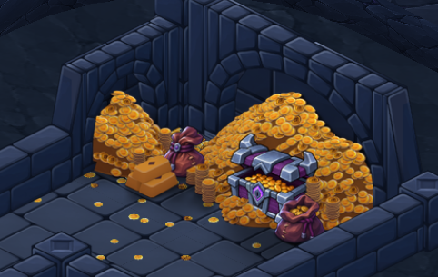

Le coffre du tribut
Le coffre entrouvert se niche dans la grande réserve, la serrure tournée vers la salle. Le motif de la monnaie du HUD et les faces dorées du coffre servent de référence aux pièces sur les dalles et sous les voûtes.
Voir les détails de la grande alcôve

Prévisualisation Godot. Peintures et références · Visibilité du coffre · Contrôles de géométrie